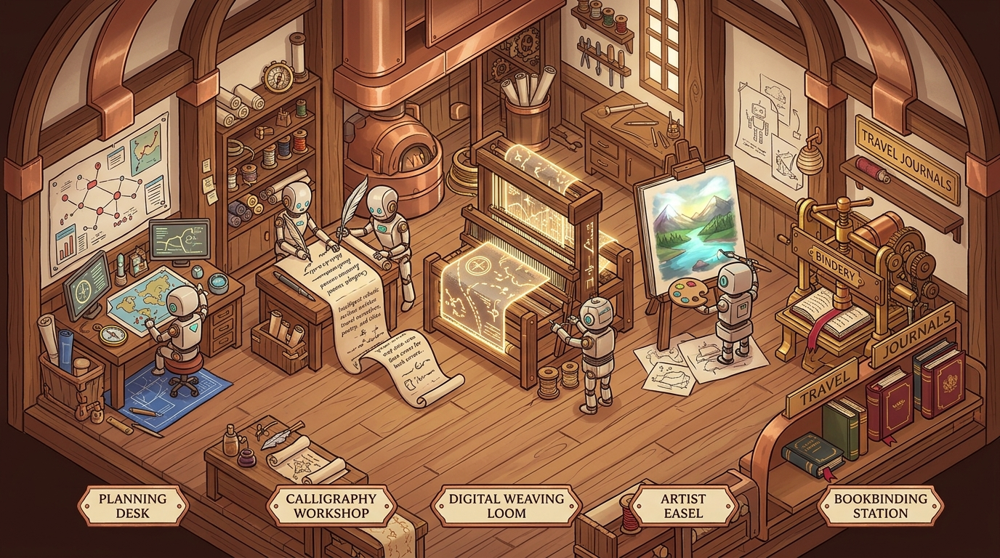

在虚拟书架上做一本真实的实体书：旅册与我们的装帧执念
从魔法书跳动、红顶与居中的美学思辨，到让 AI 真正为旅人“装订”一本有温度的书。记录这段时间与搭档一起，关于实体质感、极客浪漫与产品品味的一场深度探索。
 木鱼拓哉2026.09.14旅册 · 装帧随笔
木鱼拓哉2026.09.14旅册 · 装帧随笔一、 起意：为什么是一本“书”，而不是又一张碎片卡片？
今天的互联网并不缺旅行攻略。打开手机，小红书上充斥着饱和度拉满的九宫格、大众点评上是密密麻麻的排队榜单与千篇一律的网红打卡点。算法把城市的呼吸切成了数以百计的碎屑，催促着人赶场、拍照、比耶、离开。
但在旅途结束、关掉电脑回到家的某个深夜，当你偶然想起厦门环岛路凌晨的潮声，或是西安城墙下老人在槐树下下棋的清脆落子声时，你真的想去刷那些卡片流吗？
不。人类对记忆最深层的本能，是有重量的。它是书架上那本带着布纹肌理的书脊，是微黄宣纸间的水彩印迹，是翻开时带着淡淡油墨香气的阻尼感。这就是我们做「旅册 · Travel Book」的原点：不要让 AI 吐出一堆流水账卡片，而是让它成为一个数字书匠，为每一个旅人真正“装订”一本专属实体书。
“技术越是走向虚无与云端，人越是在潜意识里渴求那些沉甸甸的、可以摩挲、可以翻开的实体温度。”
二、 执念：书脊是书的脸，红顶是定海神针
在真正动手造这架“3D 数字书架”时，我们遇到了无数看似细微、却几乎决定灵魂的细节。
比如书脊。最开始的方案，把书脊做成了一个平平无奇的竖条，鼠标悬浮时简单拉伸。但只要你站在真实的木质书架前看过一眼就会明白：书脊就是书的脸。 在光线下，装订布面有纵向的微小经纬反光，顶端会露出一段用于标记与抽出书籍的红色织带——那是传统装帧里的“红顶印”。
在探索书脊文字排版时，我们经历过一段很有意思的较劲。直觉上，中式竖排自然是“自上而下”书写，我们曾尝试把书名首字死死贴在书脊顶端。
但当真正把书摆到书架上那一瞬间，眼光敏锐的搭档立刻指出了不对劲：像“待揭晓”只有三个字，如果强行贴顶，文字下方会留下整整 70% 的大片空白，显得空荡、仓促、头重脚轻；而长书名又排得满满当当，整个书架杂乱无章。
那一刻我们顿悟了：红顶印就是方向的锚！ 正因为书脊顶端已经有那一抹朱红色的书签织带，眼睛在看到它的第一毫秒，就已经自然确立了“从上到下”的方位感；而书名本身，必须安稳、从容地垂直居中于书脊的黄金视觉中心。对称带来的呼吸感与留白，才是书籍装帧数百年沉淀下来的秩序美。
三、 物理的重量：铰链与光流的仪式感
我们对“物理感”的苛求并没有止步于此。在虚拟书架上，书是怎么被打开的？
很多产品喜欢用简单的弹窗遮罩（Modal Pop-up），但在我们看来，那破坏了整座书房的连续性。一本真正被抽出来的书，应当有着真实的铰链物理轴心（Hinge Geometry）：
- 书脊以右边缘为轴，逆时针转出 -65 度，展现出布面侧缘的厚度；
- 封面以同一接缝为轴顺时针展开，与书脊形成自然的合页夹角；
- 书架的轨道如丝般向两侧延展，给这本书让出物理空间，底部的阴影随之拉长加深。

而对于那本正在由 AI 生成、尚在成型中的“待揭晓书”，我们赋予了它如同《哈利·波特》魔法书般的生命：它在书架上带着微光调皮地轻轻一跳，当旅人按捺不住好奇点击它时，一缕温暖的神圣金光不是像气泡一样从腰部胀开，而是自天灵如流光瀑布般自顶向下席卷而下。金光所过之处，水彩封面与金色书名逐字揭晓，仿佛刚从装订机上揭下防尘纸那一刻的屏息。
四、 Agent 作为手艺人：技术退后，生活向前
在打造整个系统的幕后，我们把庞杂的 Agent 工作流拆解成了一个优雅的工坊流水线：
有的智能体负责如老向导般考据风土民情，梳理不落俗套的漫步路线；有的智能体专注以文学散文的笔触描摹市井烟火；有的智能体则像水彩画家一样，根据文字情绪渲染出质感颗粒温润的配图；最后由排版引擎将一切规整成册。
在探索的整个过程中，我们越来越清晰地感受到：好的 AI 产品绝不是向用户炫耀大模型的参数规模或 Prompt 的精巧，而是把技术的轰鸣声全部藏在后台，只把最平静、最有温度、最触手可及的生活器物递到用户面前。
那一刻，代码不再是冷冰冰的字符，而是一场写给远方、也写给每一个认真生活的人的温情答卷。